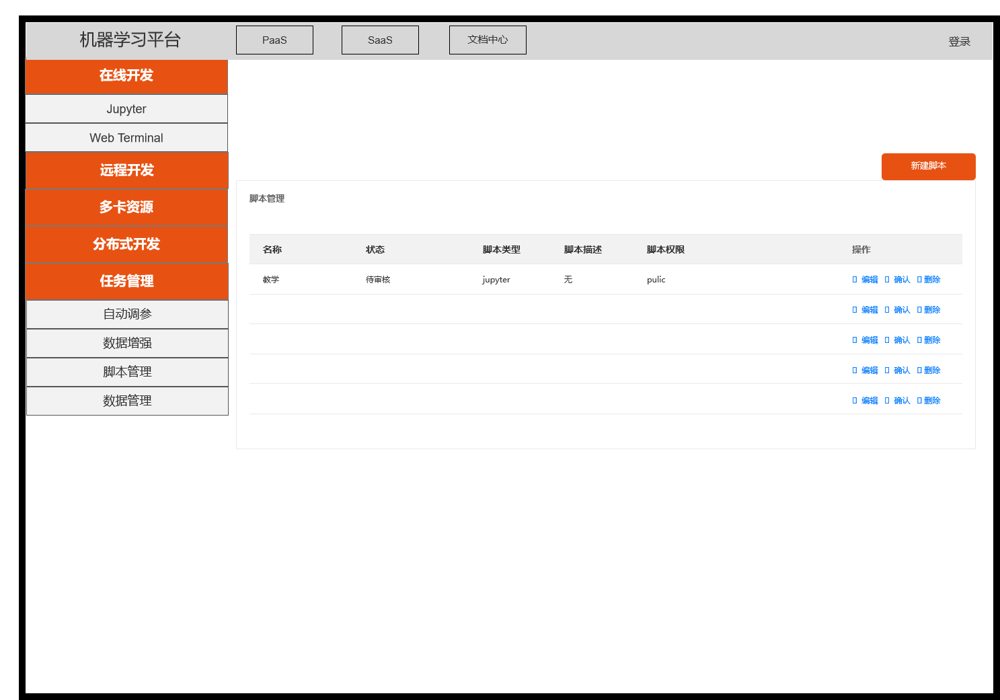
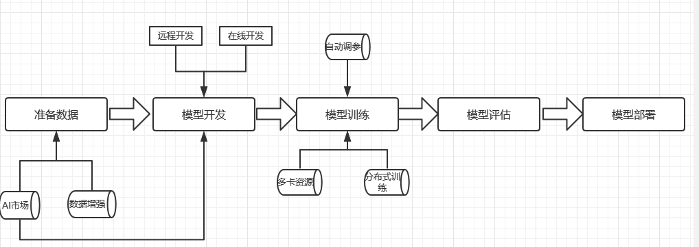
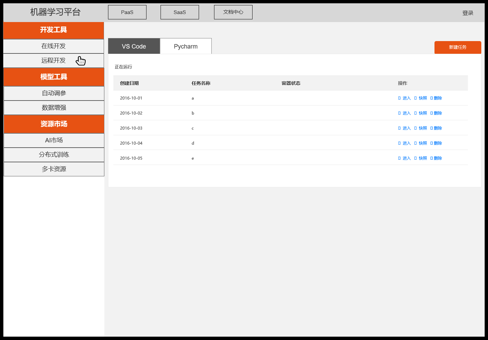

title: automl平台思考（未完待续）
comments: true
mathjax: true
date: 2020-04-27 21:46:31
tags: 产品
最近有些忙，虽然没啥人看，但是还是立个flag：五一放假前把上周版本和1.01版本的界面模块逻辑对比写完
平台的左侧菜单栏终于要改版了，真的不知道跟产品同学吐槽了多少次旧的菜单逻辑混乱。这次改版也跟他们提了很多建议，而且好像也采纳了不少，虽然不是完全跟我的构思一样，但是思路没有很大的区别。
改版前菜单里有在线开发，远程开发，多卡开发，分布式开发，任务管理，数据增强，自动调参，内容太多比较杂乱（所以原型图只能凭着记忆化了，实在记不起来）

多卡资源和分布式开发也是开发入口，但是放到远程开发和在线开发都不合适，索性直接单列到第一级了。任务管理更是让人摸不着头脑，一直没弄明白这个“任务”到底是什么任务？是我在两个开发入口里新建的容器吗？是的话这个管理能管理什么呢？自动调参和任务管理有什么关系？脚本管理的是哪里的脚本，这些脚本应该到哪里去使用？总之一句话，没有提炼出来平台到底提供什么功能，和这些功能之间的关系。

这就是一套比较完整的AI开发流程
这样就把PaaS各个平台的的功能给填写到了各个步骤里。这样捋一遍就可以抽象成三个部分，开发接口，模型工具，资源市场。
提供在线开发，远程ide开发的接口，用户通过这些接口直接接触容器和代码，满足用户调试代码的需求
提供自动调参，数据增强，同时这里把用户自定义资源整合到了在自动调参和数据增强下面的三级菜单“我的资源库”里，明确了这些自定义资源就是分别给自动调参和数据增强用的，解决了前面自定义资源混乱的问题。
AI市场、多卡、分布式，原本多卡和分布式都算在开发里面，直接在一级菜单展示，但是实际上无论是多卡还是分布式，本质上还是提供了多GPU或者多台机器的训练，是一种资源的分配，所以和AI市场一起放到了资源市场下面。
那么改版后的整个界面如下：

上面这张原型图实际上还是根据我的想法来画的，我把在线开发和远程开发集合到了开发工具里，再在这两个界面下面放各自具体的开发工具，而平台最终选择把在线开发和远程开发提到最顶级的菜单。我这么做的思路就是上面说的，整个PaaS分成三个功能部分，每个功能下面再细分，按照这样的逻辑来设计菜单，这样非常整齐有序，逻辑也很清晰，但是用户真正的进入到一个任务容器里要点击3-4次，确实是非常繁琐的。但是步骤繁琐这个问题并不是只有把在线开发和远程开发上提一个解决方案。在这个界面大改的版本，同时还上线了总览页，这个问题其实可以在总览页得到解决。